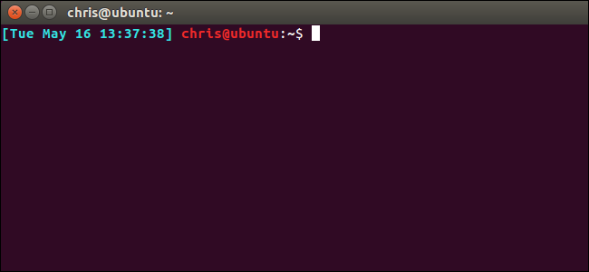
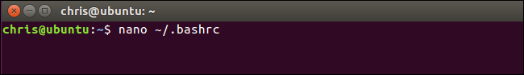
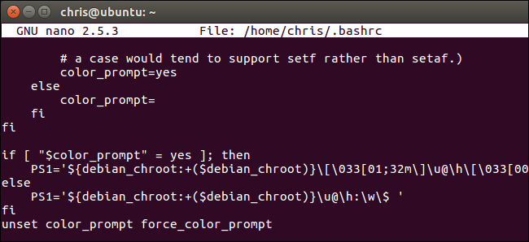
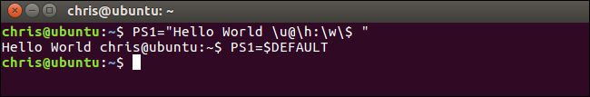
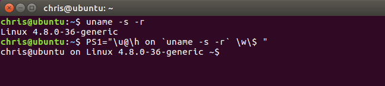
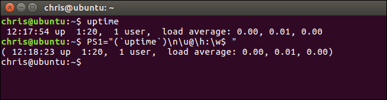

How to Customize (and Colorize) Your Bash Prompt

Most Linux distributions configure the Bash prompt to look something like username@hostname:directory$ . But you can configure the Bash prompt to contain whatever you like, and even choose whatever colors you like.
The example steps here were performed on Ubuntu 16.04 LTS. The process should be the same on other Linux distributions, although the default Bash prompt and settings in the .bashrc file may be a bit different.
Where the Prompt Variable is Stored
Your Bash prompt configuration is stored in your user account’s .bashrc file, which is at ~/.bashrc. So, if your username is bob, the file is at /home/bob/.bashrc.
You can open the file to view the current Bash variable. We’ll use nano as our example text editor, although you could also use vi, emacs, or any other text editor you’re comfortable with. Open a Terminal and run:
nano ~/.bashrc

Scroll down to the PS1= section. The first variable looks rather complicated because it includes color information—we’ll explain that later. The second variable, without color information, reads as follows:
${debian_chroot:+($debian_chroot)}\u@\h:\w\$

This is still a little complicated due to the ${debian_chroot:+($debian_chroot)} bits. These just tell Bash to let you know if you’re using a Debian chroot environment and normally won’t be shown. Ignoring those, here’s the default structure of the Bash prompt variable:
\u@\h:\w\$
\u indicates your username, @ indicates the @ sign, \h indicates the hostname (computer name), : indicates the : character, \w indicates the working directory, and \$ indicates a $ if you’re a normal user account or # if you’re root. So, putting that all together, you get username@hostname:working_directory$.
To change your Bash prompt, you just have to add, remove, or rearrange the special characters in the PS1 variable. But there are many more variables you can use than the default ones.
Leave the text editor for now—in nano, press Ctrl+X to exit. We’ll show you how to experiment with variables before actually writing a new one into your .bashrc file.
How to Create a Custom Bash Prompt
Your Bash prompt configuration is stored in the PS1 variable. To save the contents of the PS1 variable into a new variable, run the following command:
DEFAULT=$PS1
You can now set the PS1 variable to different values to experiment. For example, the first line here would set your prompt to a basic “user$” prompt, while the second would set your prompt to a basic “user:working_directory$” prompt.
PS1="\u\$ "
PS1="\u:\w\$ "
If you ever want to get back to your default prompt, just run the following command.
PS1=$DEFAULT
Bash will be restored to its default prompt thanks to the fact that you saved those default settings earlier. Note that any changes you make here are only temporary for the current Bash session, so you can always sign out and sign back in or close and reopen the terminal window to go back to your default prompt. But the above line makes it possible to easily get back to your default Bash prompt without the hassle of signing out or closing a window.
You can add any characters or text to the variable. So, to prefix the default prompt with “Hello World”, you could use:
PS1="Hello World \u@\h:\w\$ "

Now that you’ve got the basics down, you just need to know what all the special characters are. You probably won’t care about many of these, but here’s the full list as it appears in the Bash manual:
So, if you wanted to add the date and time to your Bash prompt and put the working directory on command on a second line, you could use the following construction:
PS1="[\d \t] \u@\h\n\w\$ "
The square brackets here aren’t necessary at all, but help break things up visually and make the line easier to read. As we covered earlier, you can add any text or normal characters to the variable you like, so feel free to use whatever works for you.

There’s one more powerful trick you should know about: You can add the output of any command to the prompt. Whenever the prompt appears, Bash will run the command and fill in the current information. To do this, just include any command you want to run between two ` characters. That’s not an apostrophe—that’s the grave accent, which appears above the Tab key on your keyboard.
For example, let’s say you want to view the Linux kernel version in the prompt. You could use a line like the following:
PS1="\u@\h on `uname -s -r` \w\$ "

As another example, let’s say you want to view the system’s uptime and load average, as displayed by the uptime command. You could use the following construction, which puts the uptime on its own line before the rest of the prompt.
PS1="(`uptime`)\n\u@\h:\w$ "

Feel free to experiment with different special characters and commands to assemble your ideal command prompt.
How to Add Colors to Your Bash Prompt
Once you’ve figured out your preferred prompt, you can add colors to it. This is actually very simple, but it makes the variable look awfully messy and complicated if you don’t understand what you’re looking at.
For example, the default color prompt variable from earlier was:
${debian_chroot:+($debian_chroot)}\[\033[01;32m\]\u@\h\[\033[00m\]:\[\033[01;34m\]\w\[\033[00m\]\$
Or, removing the debian_chroot bits once again:
\[\033[01;32m\]\u@\h\[\033[00m\]:\[\033[01;34m\]\w\[\033[00m\]\$

This is actually just the \u@\h:\w$ variable from earlier, but with color information. Really, we can break it down into a few sections:
\[\033[01;32m\]\u@\h
\[\033[00m\]:
\[\033[01;34m\]\w
\[\033[00m\]\$
The first section is the \u@\h bit, preceded by color information that turns it green. The second is the : character, preceded by color information that removes any coloring. The third is the \w bit, preceded by color information that turns it blue. The fourth is the \$ bit, preceded by color information that removes any coloring.
Once you understand how to construct color tags of your own, you can add whatever colors you like to whatever sections of your Bash prompt you like.
Here’s what you need to know: You must include the entire color code information between the \[ and \] characters. Inside the tag, you must begin with either \033[ or \e[ to indicate to Bash that this is color information. Both \033[ and \e[ do the same thing. \e[ is shorter so might be more convenient to use, but we’ll use \033[ here as it matches what’s used by default. At the end of the tag, you must end with m\ to indicate the end of a color tag.
Breaking that down, here’s what every color tag will look like. The only difference is the information you add in place of COLOR to define the actual color:
\[\033[COLORm\]
Bash allows you to change the color of foreground text, add attributes like “bold” or “underline” to the text, and set a background color.
Here are the values for foreground text:
For example, since purple text is color code 32, you’d use \[\033[32m\] for purple text.
You can also specify an attribute for the text. This attribute must be added before the color number, separated by a semicolon (;). Text with these attributes will look different in different terminal emulators.
Here are the values for text attributes:
You don’t actually need to include the normal text attribute. That’s the default, anyway.
For example, since red text is code 31 and bold text is code 1, you’d use \[\033[1;31m\] for bold red text.
You can also specify a background color, but you can’t add an attribute to a background color.
Here are the values for background colors:
For example, since a blue background is code 44, \[\033[44m\] would specify a blue background.
You can specify both foreground and background color tags. For example, 42 represents a green background and 31 represents red text. So, to make the default prompt become red text on a green background, you’d use:
PS1="\[\033[42m\]\[\033[31m\]\u@\h:\w\$ "
We just specify a single background color and then a single foreground text color here, which begins at the start of the prompt and is applied to all text in the prompt. However, you can specify as many color tags as you want in the variable to color different sections of your prompt however you like.
The background and foreground text colors keep going past the prompt unless you specify color code 00 clear the color information. You can also use this tag within the variable to reset formatting back to default somewhere in your prompt. For example, the following line would end all coloring before the \$ character.
PS1="\[\033[42m\]\[\033[31m\]\u@\h:\w\\[\033[00m\]\$ "
How to Set Your New Default Prompt
Once you’re done experimenting with colors, you should have a Bash prompt you like in the current session. But you probably want to make that new prompt permanent so it’s automatically used in all your Bash sessions.
To do this, you just need to change the contents of the PS1 variable in the .bashrc file, which we looked at earlier.
Open the .bashrc file in your preferred text editor, like so:
nano ~/.bashrc
Scroll down and locate the PS1= section. Just replace the default variable with your customized variable. You’ll probably want to leave the ${debian_chroot:+($debian_chroot)} bits alone, however—they won’t appear unless you’re in a chroot environment, anyway.
Enter your colored PS1 variable under the if [ "$color_prompt" = yes ]; then line. Enter the variable without colors under the else line.
Save the file and close your text editor. For example, to save the file in nano, press Ctrl+O, press Enter, and then press Ctrl+X to exit.
The next time you start a new Bash shell—for example, by signing in at the terminal or by opening a new terminal window—you’ll see your customized prompt.